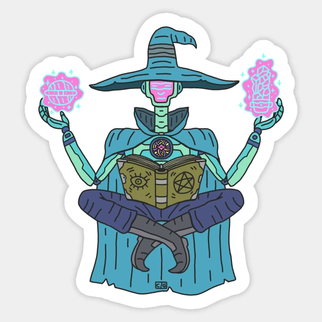
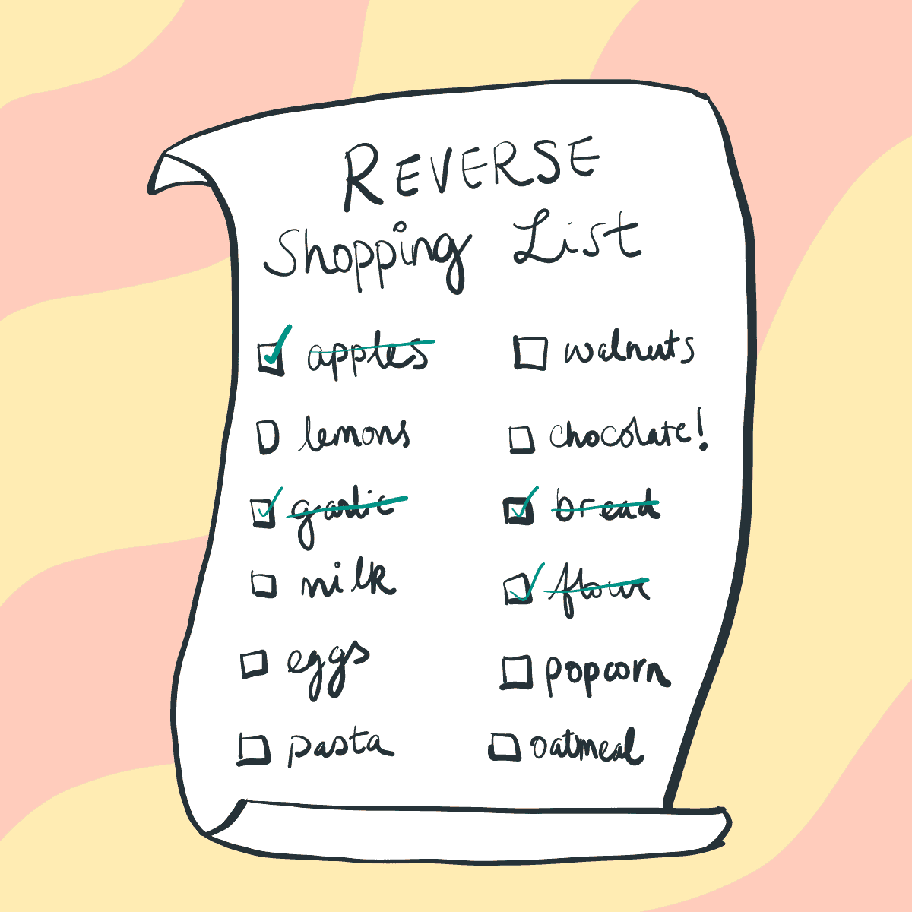

Introducing the Shop Wizard Bot - the perfect digital assistant for creating shopping lists quickly and efficiently.
This bot is designed to make your shopping experience hassle-free by allowing you to create and manage your shopping lists with ease.
This helps you navigate the store more efficiently and saves you time.

You can also save your shopping lists on the Shop Wizard Bot, making it easy to access them whenever you need to make a purchase.
The Shop Wizard Bot is available 24/7 and can be accessed from anywhere, making it the perfect shopping companion for busy individuals who want to streamline their shopping experience.
Whether you're shopping for groceries, household essentials, or gifts, the Shop Wizard Bot makes it easy to stay organized and on top of your shopping needs.
Here are some features that the Shop Wizard Bot could offer:
1. Versatile List Management: Easily create and manage multiple lists for different purposes, such as grocery shopping or shopping at different stores. This helps you stay organized and focused on your specific needs.
2. Seamless Item Management: Effortlessly add and remove items from your lists as your shopping requirements change. This flexibility ensures that your shopping experience is tailored to your preferences and easily adaptable.
3. Convenient Contact Book: Maintain a complete contact book within the bot, allowing you to effortlessly manage your important contacts. This feature provides convenience and efficiency in keeping track of your contacts.
4. Streamlined Contact Management: Add new contacts and remove unnecessary ones whenever it suits you. This ensures that your contact book is always up to date, clutter-free, and allows you to stay connected effortlessly.
5. Weather Updates: Stay updated on the weather conditions effortlessly. The bot provides real-time temperature updates and notifies you if it's raining, helping you plan your shopping trips accordingly.